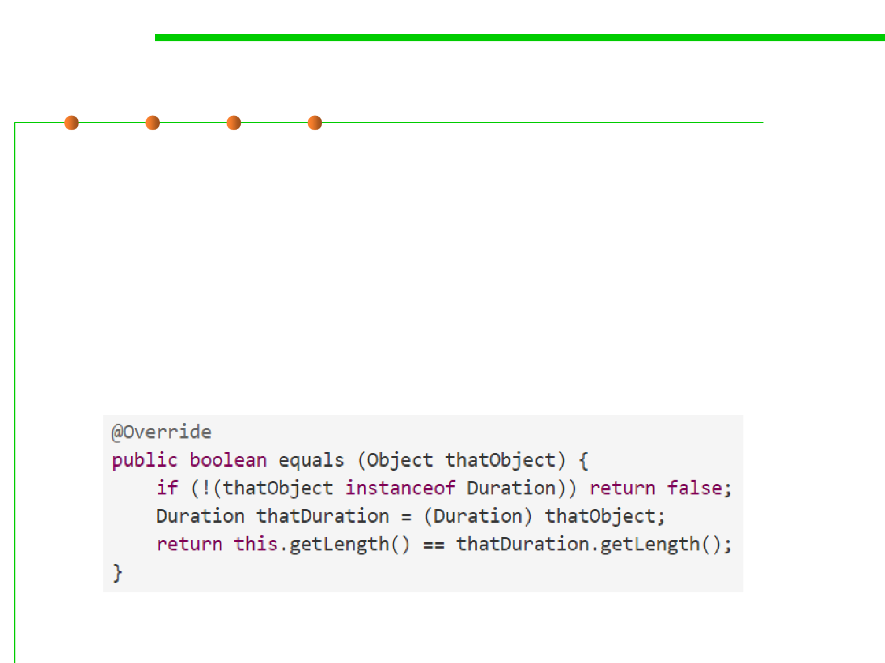

Overload vs. override
3.5 Equality in ADT and OOP
▪ It’s easy to make a mistake in the method signature, and overload a
method when you meant to override it.
▪ Java’s annotation @Override should be used whenever your
intention is to override a method in your superclass.
▪ With this annotation, the Java compiler will check that a method
with the same signature actually exists in the superclass, and give
you a compiler error if you’ve made a mistake in the signature.